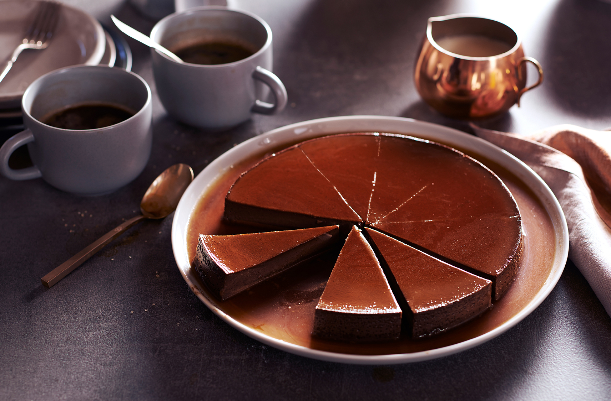

Beautiful Creamy Chocolate Flan Recipe

The mouth watering creamy vanilla taste of flan, a texture that just melts away in your mouth is the main reason why so many people love flan.
This is a recipe how to make the Mexican dish.
What is Flan?
Flan is a custard dessert with a layer of caramel sauce that is commonly prepared in Latin America. It is made of 5 main ingredients: eggs, milk, sweetened condensed milk, sugar and vanilla. You can then add other ingredients to the mix to create different flavors.
For example, you can add coconut milk to make a coconut flan, pineapple to make pineapple flan and even chocolate to make a chocolate flan.
Ingredients
- 1/2 Cup Sugar
- 4 oz. Semi-sweet chocolate
- 15 oz evaporated milk (1 can)
- 12 oz sweetened condensed milk(1 can)
- 5 large eggs
- 1/2 teaspoon cinnamon
- 1 teaspoon vanilla
Instructions
- Preheat oven to 350 degrees.
- Prepare a water bath by placing an 8-inch round cake pan in a 13×9 baking pan. Fill the outer dish with hot water to ½ inch depth.
- Heat sugar in a small saucepan over medium heat, stirring constantly until melted and golden brown; Pour into 8-inch pan. Remove 8-inch pan of water; working quickly, swirl melted sugar around bottom and sides of the round pan to coat. Return the dish to water.
- Add chocolate and evaporated milk to a medium microwaveable bowl. Place in the microwave for 30 seconds. Stir the milk and chocolate together. Continue heating the milk, 30 seconds, at a time and stirring until the chocolate is completely melted.
- In a blender, combine chocolate milk mix, sweetened condensed milk, eggs, cinnamon and vanilla. Pour the mixture into the 8-inch pan with the caramel layer.
- Bake for 50 minutes or until a table knife inserted in the middle comes out clean. Cool on wire rack for about 30 minutes and place in the refrigerator for about 4 hours to cool completely before removing from the pan.
- Run a knife around the edges of the pan. Invert a serving plate over the round pan, hold tightly and quickly turn over. Gently, shake the mold to release.
- Keep refrigerated until time to serve.
Nutrition
- Calories: 380Kcal
- Carbohydrates: 49g
- Protein: 11g
- Fat: 16g
- Saturated Fat: 9g
- Cholesterol: 133mg
- Sodium: 151mg
- Potassium: 437mg
- Fiber: 1g
- Sugar: 46g
- Vitamin A: 396IU
- Vitamin C: 2mg
- Calcium: 284mg
- Iron: 2mg